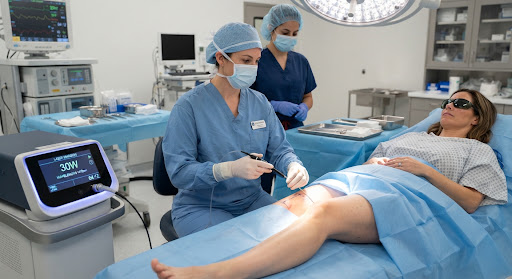

O Endolaser combina energia laser com drenagem linfática para eliminar gordura localizada, reduzir medidas e firmar a pele — sem cirurgia e com recuperação mínima.
O Endolaser é uma tecnologia que combina a ação de um laser de baixa frequência com pressão mecânica e drenagem linfática. O laser atua nos adipócitos (células de gordura), liberando seu conteúdo para ser eliminado naturalmente pelo organismo.
Além da redução de gordura, o calor gerado estimula a produção de colágeno, promovendo firmeza e melhora da textura da pele — resultado visível já nas primeiras sessões.

Atua diretamente nos adipócitos das áreas-problema — abdômen, flancos, culote, braços e papada — reduzindo volume de forma progressiva.
O estímulo à produção de colágeno e elastina resulta em pele mais firme e com menos flacidez — especialmente após perdas de peso.
A drenagem linfática combinada ao laser atua no tecido conjuntivo, suavizando o aspecto casca de laranja em poucos tratamentos.
Procedimento externo, não invasivo. Você sai caminhando e volta às atividades do dia no mesmo dia ou no dia seguinte.
Pacientes relatam redução de 2 a 6 cm na circunferência abdominal ao longo do protocolo — resultados mensuráveis desde as primeiras sessões.
A sensação durante o tratamento é de calor agradável e massagem. Muitas pacientes descrevem como uma sessão de spa terapêutico.
Mapeamos as áreas de gordura localizada, medimos a circunferência e definimos o número ideal de sessões e o protocolo para o seu caso.
O handpiece é deslizado sobre a área com movimentos específicos de drenagem. O calor do laser desestrutura as células de gordura enquanto a pressão mecânica estimula a circulação linfática.
Cada sessão dura cerca de 50 minutos. O protocolo completo é geralmente de 10 a 15 sessões, com medições comparativas ao longo do processo para documentar sua evolução.
São indicações diferentes. O Endolaser é ideal para quem quer reduzir gordura localizada moderada sem cirurgia e sem tempo de recuperação. A lipoaspiração é um procedimento cirúrgico para remoção de volumes maiores. Nossa especialista avalia qual é o mais indicado para o seu caso na consulta gratuita.
O protocolo padrão é de 10 a 15 sessões, 2 a 3 vezes por semana. Os primeiros resultados — redução de medidas e melhora da textura — são perceptíveis a partir da 4ª ou 5ª sessão.
Sim! O Endolaser atua também na melhora da celulite, especialmente nos graus 1 e 2. A ação sobre o tecido conjuntivo e a melhora da circulação linfática suavizam o aspecto de casca de laranja progressivamente.
Agende sua avaliação gratuita. Nossa especialista analisa suas áreas de interesse e monta o protocolo personalizado para você.
Agendar minha avaliação gratuitaRespondemos em até 2h no horário comercial.